解题总结-张扬威
风险描述¶
口令直接使用了杂凑而没有加盐的重要数据传输机密性¶
口令的重要数据传输机密性 风险评价：口令的传输机密性仅采用了sm3杂凑运算 相同明文运算后一定会得到相同的杂凑值 存在攻击者通过字典攻击爆破还原明文的可能性 无法保证重要数据的传输机密性 所以判断为高风险
使用sm3进行存储完整性保护¶
来源于FAQ 第四版
仅使用SM3算法实现数据存储完整性功能，在安全机制方面存在缺 陷。入侵者可在篡改数据后，重新进行SM3杂凑运算并覆盖原先的杂凑 值。因此，应判定为“不符合”
因此建议使用合规的密码产品通过HMAC-SM3、基于SM4的MAC （参考GB/T 15852.1-2020《信息技术 安全技术 消息鉴别码 第1部分： 采用分组密码的机制》）或数字签名的方式实现数据存储的完整性。
使用ecb模式进行数据机密性保护¶
2024年第三题第一问¶
ECB工作模式可能存在的问题：分组密码的ECB工作模式，因其工作流程的原因，在使用同一密钥的情况下相同的明文分组会产生相同的密文分组，攻击者在获取部分明密文分组对后可推测其他密文信息，也不能抵抗对分组的重放、嵌入、删除等攻击。并且违反了GB/T 17964-2021信息安全技术 分组密码算法的工作模式中 对于超过一个分组长度的明文一般建议不使用ECB工作模式的要求如图1
图1
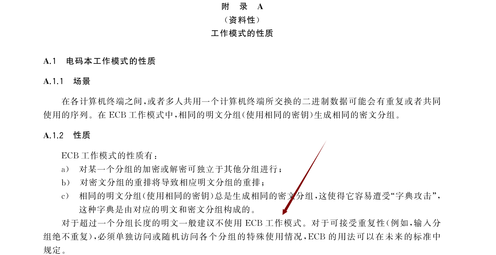
0051 对称密钥管理 密钥封装方式错误¶
来源 老师.pdf
问题 :密钥封装方式不符合GM/T0051-2016《密码设备管理 对称密钥管理技术规范》标准要求，接收者接收后无法对密钥进行管理并保证正确使用
改进建议:严格按照GM/T0051-2016《密码设备管理对称密钥管理技术规范》标准7.2.2进行分发密钥的封装。
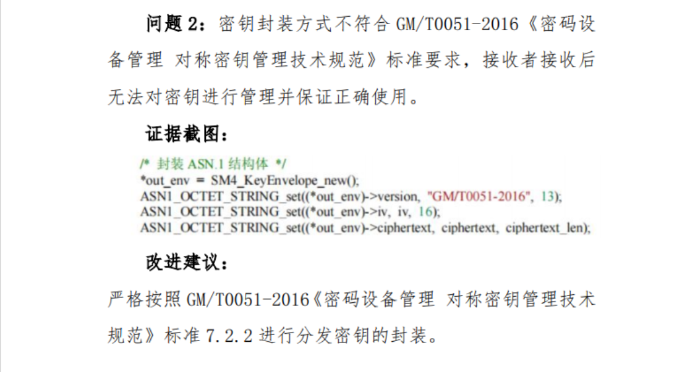
0051 对称密钥管理规定的sm4cbc iv初始值¶
在0051中要求 加密时应采用sm4算法 cbc模式 并且iv值需要为全0
2025年第十八题
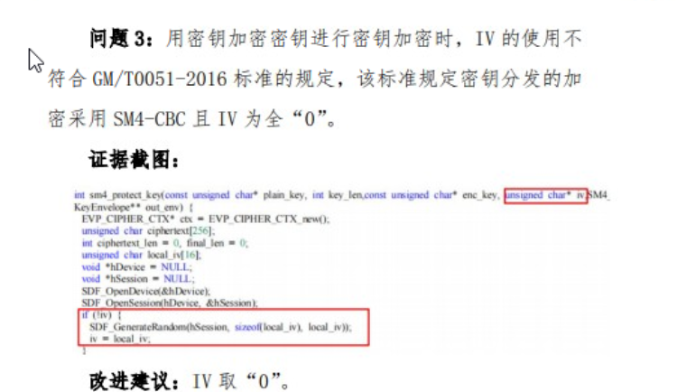
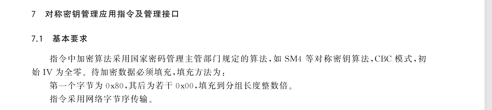
0051 对称密钥管理 完整性保护使用了cbc mac¶
不确定对不对 但老师的意思好像是说 0051中规定了不能用cbc mac得用 hamc 具体依据不知道是不是下面的封装格式里的内容
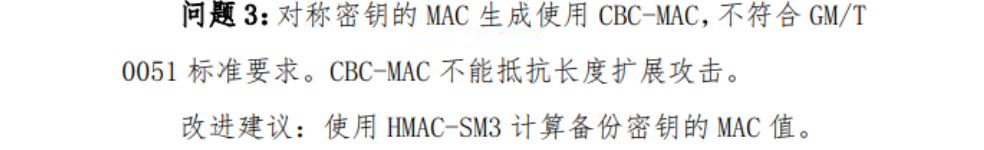
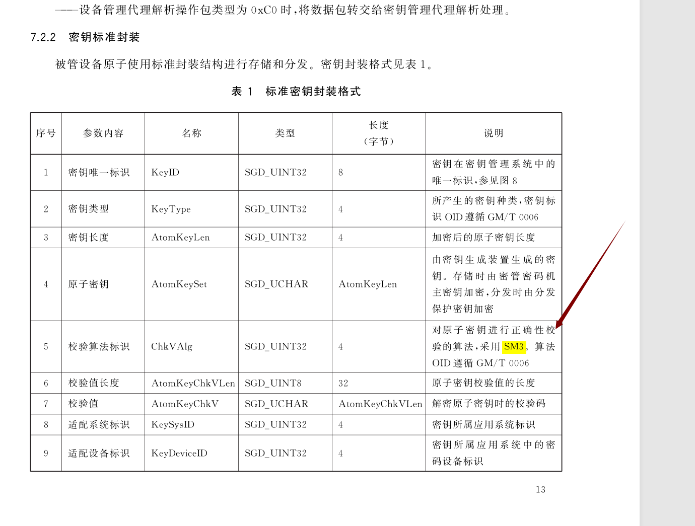
使用openssl进行密码保护¶
2025年第十八题
问题：密码（加密，完整性）保护过程调用openssl软件库实现 未在合规的密码模块内实现 导致 密钥明文出现在密码设备之外 存在泄露风险
改进建议：要用经过合法认证的密钥管理系统进行对称密钥管理 不能用openssl来实现密钥密码（加密，完整性）保护
0091基于口令的密钥派生¶
盐值位不小于64比特 也就是8字节 迭代次数不小于1024次 但对特别重要的推荐10000000迭代次数
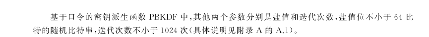
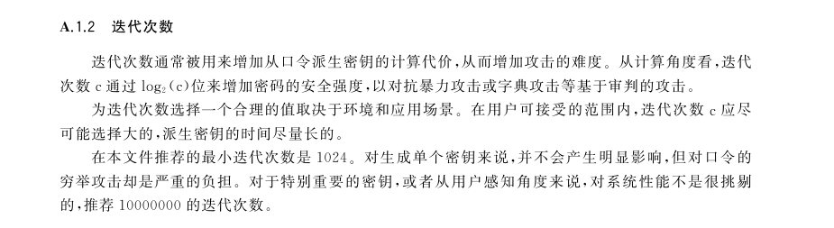
SM4CBC 加密时 IV值¶
2024年第一题¶
安全风险：发送方IV值固定如图1在程序代码中没有随机产生 在相同密钥相同IV值的情况下 同明文加密的密文相同 存在明文信息泄露的风险 并且IV值固定不符合GB/T 17964-2021 信息安全技术 分组密码算法的工作模式 中CBC工作模式有关于IV的建议
改进建议：通过合规的密码设备每次使用时随机生成IV值
图1
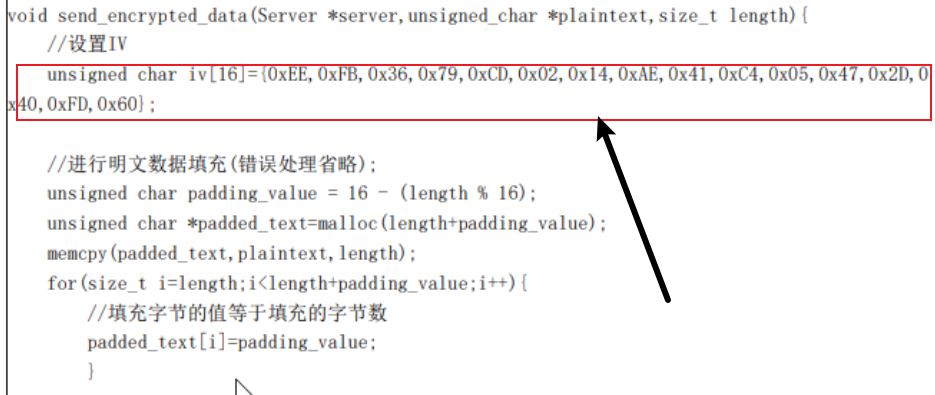
数据传输过程中密文及IV值没有进行完整性保护¶
2024年第一题¶
安全风险：在数据传输过程中密文及IV值没有进行完整性保护 如图1 可能会被攻击者篡改 无法保证数据的完整性及真实性
改进建议：对密文及IV值使用HMAC或者SM2签名进行完整性保护
图1
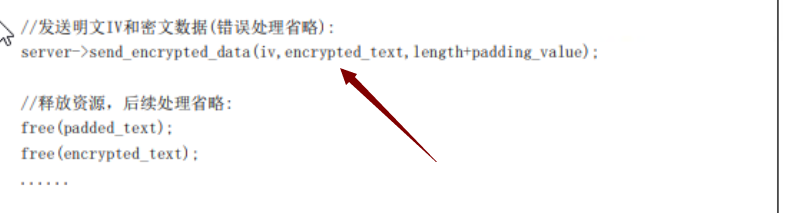
存在CBC填充提示攻击¶
2024年第一题¶
安全风险：服务端在检测到填充错误时会将填充错误信息返回至客户端如图1，该操作会导致CBC填充提示攻击，攻击者可利用相关提示信息对密文进行破解 威胁数据的保密性
改进建议：不应向客户端返回具体的填充错误信息。应结合完整性保护机制，只有在完整性校验通过后再进行解密 若校验失败则统一丢弃报文 避免暴露错误信息
图1
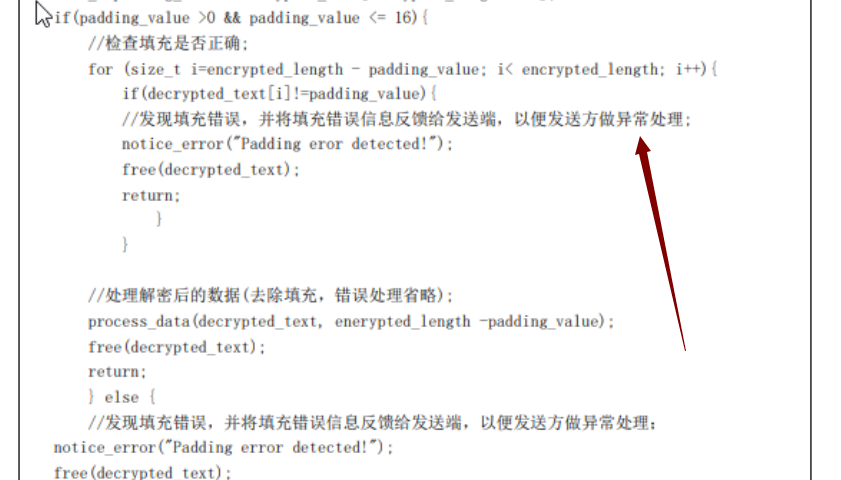
hmac的mac值被截取了2字节¶
2024年第二题第三问¶
安全风险：hmac的输出结果仅截取了2字节作为mac值如图1 2字节的mac值的抗伪造的安全强度仅为2^16 强度过低 攻击者可以轻易通过遍历的手段穷尽mac值可能性 数据的完整性保护无效 并且16位mac值违反GB/T 15852.2中对于HMAC的MAC值的长度m应不小于32位的要求 如图2
改进建议：不应截断HMAC的输出值 应该使用完整的HMAC结果作为MAC值。若因特定业务的需要必须截断，其截断后的长度也必须符合相关国家标准。
图1
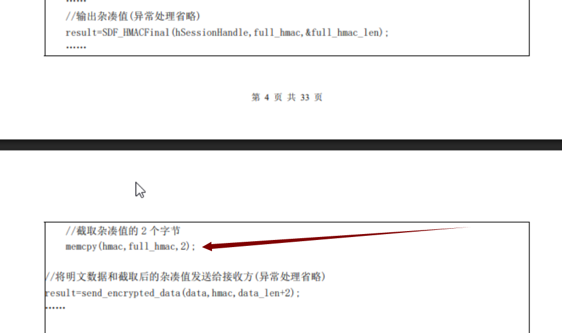
图2
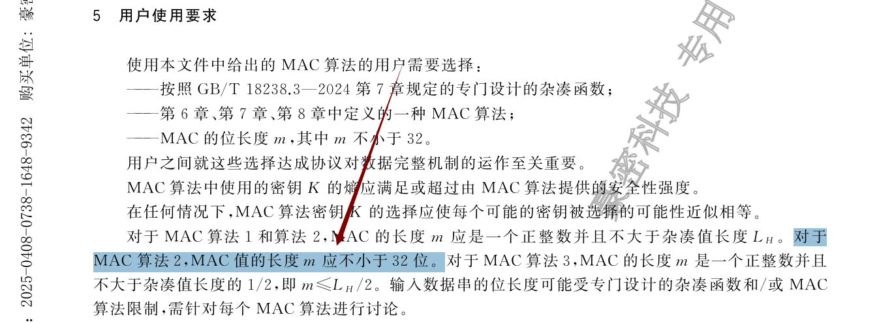
密钥没有在安全设备中产生¶
2024年第八题-自己写的-产生和传输同时存在问题¶
安全风险1：密钥的产生是通过 generate_key函数取系统随机数的方式产生的如图1 没有调用合规的密码设备产生 密钥的产生过程没有得到安全认证 如果应用系统服务器出现故障或者被篡改，导致生成的密钥不随机 那么密钥有被预测的风险 并且违反了GB/T 39786-2021的要求 密钥在符合GB/T37092的密码产品 中产生是十分必要的 如图2
改进建议1：密钥应该在合规的密码设备中产生 可以调用合规密码设备中的如SDF_GenerateKeyWithIPK_ECC和SDF_GenerateKeyWithKEK等接口 在密码设备内安全生成密钥并使用 并且在使用完成以后及时调用SDF_DestroyKey销毁会话密钥
图1
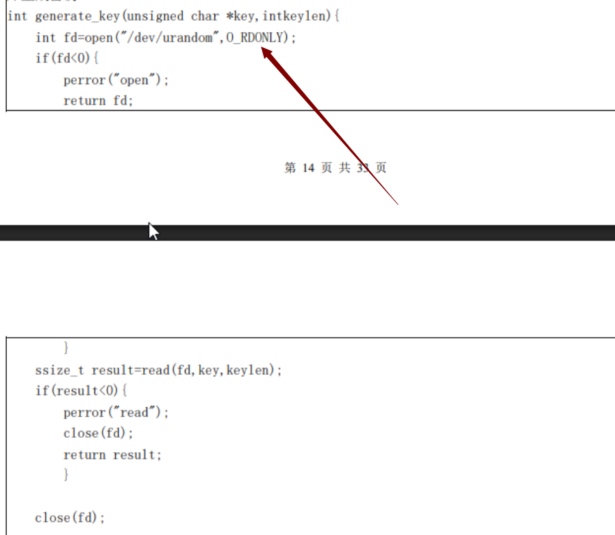
图2
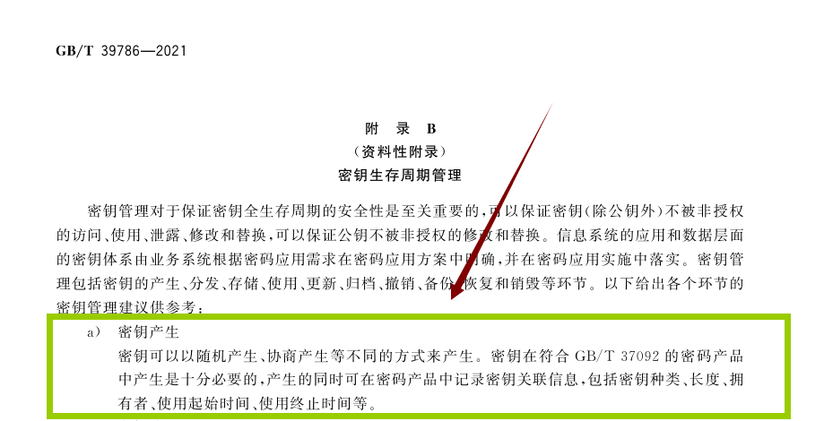
2024年第八题-老师ppt¶
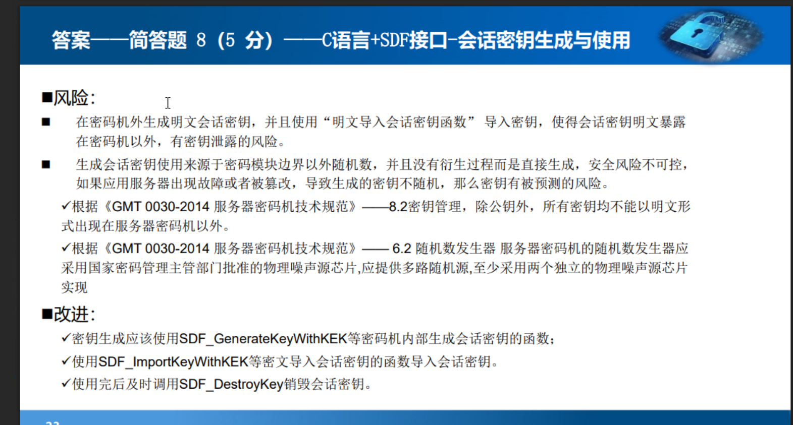
密钥在安全设备外明文传输¶
2024年第八题-自己写的-产生和传输同时存在问题¶
安全风险2：密钥的产生是通过 generate_key函数直接产生的明文密钥，并且产生后直接导入了服务器密码机中作为会话密码使用如图1，密钥明文出现在了系统中有泄露的安全风险，并且违反了GM/T 0030-2014 服务器密码机技术规范的要求 除公钥外,所有密钥均不能以明文形式出现在服务器密码机外如图2
改进建议2：密钥不应该已明文的形式在应用系统中传输及使用，应该调用合规密码设备中的如SDF_GenerateKeyWithIPK_ECC和SDF_GenerateKeyWithKEK等接口 生成密钥 并在使用时通过对应的密钥句柄使用密钥 并且在使用完成以后及时调用SDF_DestroyKey销毁会话密钥
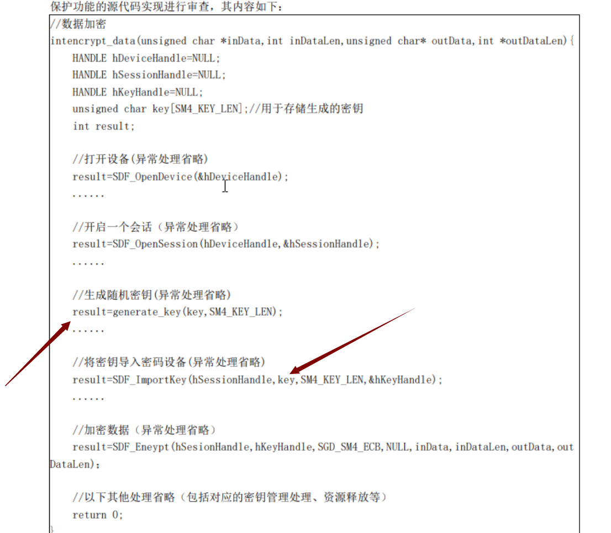
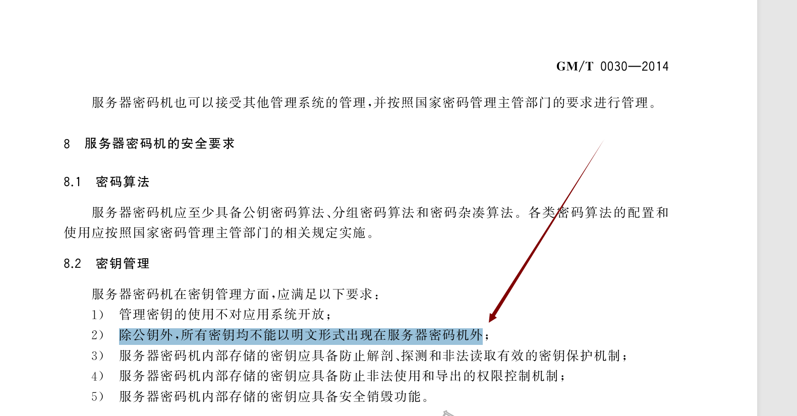
2024年第八题-老师ppt¶
源代码中数据库连接操作没有使用密码技术并硬编码¶
2024年第九题¶
安全风险1：数据库连接操作的身份鉴别方式为用户名+口令 未采用密码技术进行身份鉴别 且口令直接硬编码在源代码中如图1。一旦源代码或程序泄露，攻击者可直接连接数据库或者可通过逆向等手段获取口令值，导致数据库内存储的敏感信息面临被窃取或篡改的风险
改进建议1：应该采用密码技术对数据库连接的操作进行保护，同时禁止在代码中硬编码如口令或密钥等信息。
图1
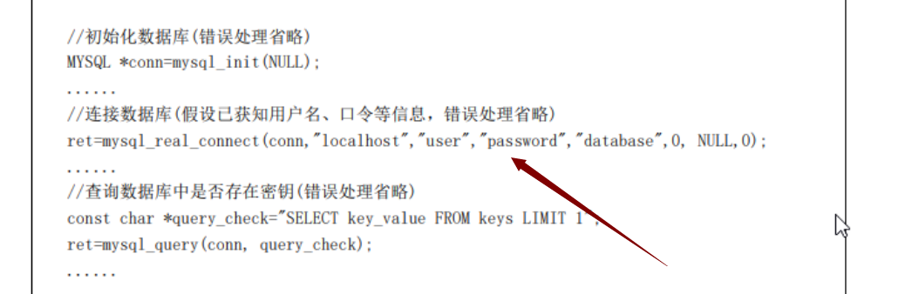
云需求场景下个租户没有进行合理的密钥隔离¶
2024年第九题¶
安全风险1：从以下代码中的SQL查询语句中可以看SQL查询只查询了并获取了第一条记录如图1 导致各企业使用的密钥完全相同，未实现各企业用户的密钥隔离，并且如果某用户获取到了其他用户的数据可直接进行解密
改进建议1：在调用get_key()函数时可以传入enterprise_id，在进行SQL 查询加入对enterprise_id字段的判断，确保不同企业用户获取各自的专属密钥，并且可以使用云服务器密码机，针对不同企业用户设置不同的虚拟密码机，由各企业用户管理和使用。
图1
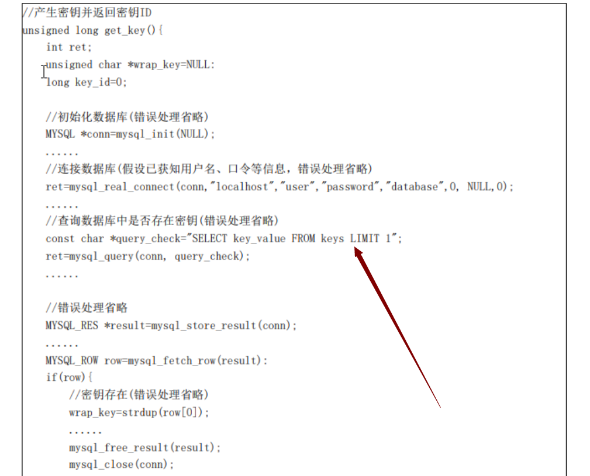
机密性保护和完整性保护密钥混用¶
2024年第九题¶
安全风险1：由下列程序代码可以看出如图1 在进行数据的机密性保护和完整性保护使用的密钥为同一个密钥，如果发生密钥泄露时机密性和完整性保护都会出现问题，并且不符合GB/T 39786-2021 信息安全技术信息系统 密码应用基本要求中对于密钥使用的要求 每个密钥一般只有单一的用途,明确用途并按用途正确使用是十分必要的。如图2
改进建议1：应遵循密钥用途单一性原则。为每个企业用户分别生成独立的机密性保护密钥和完整性保护密钥，严禁一钥多用。
图1
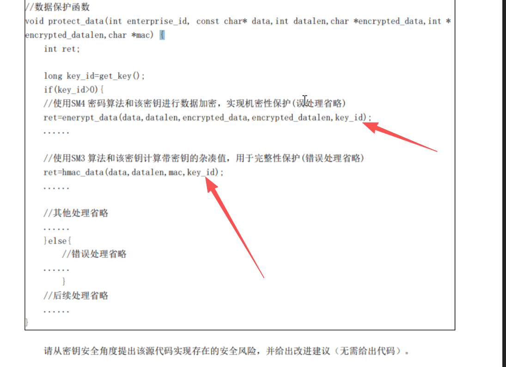
图2
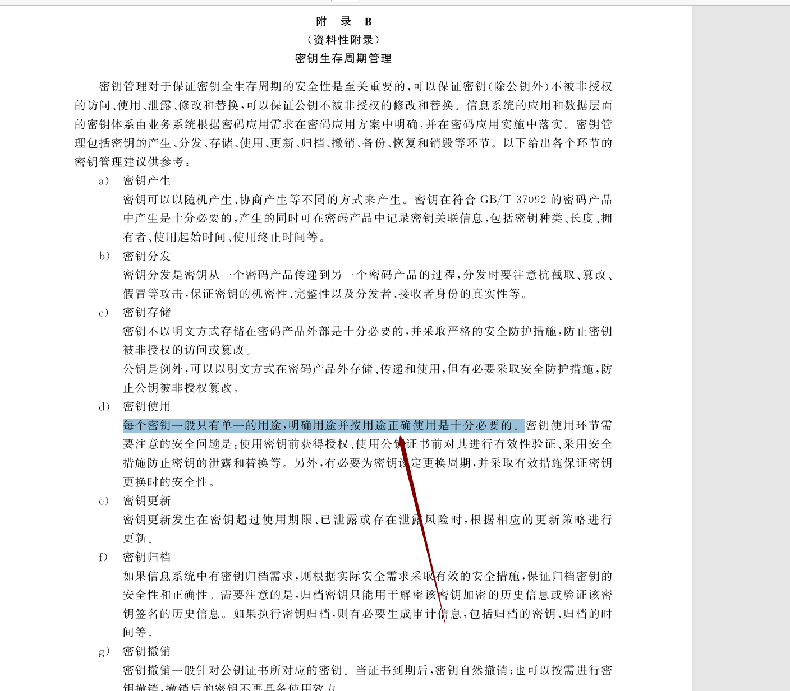
密钥存储和使用时没有进行完整性保护和校验¶
2024年第九题¶
安全风险1：由下列代码可以看出如图1 密文密钥被直接存储在了数据库中没有进行完整性保护 读取使用时也并不存在完整性校验机制 导致如果数据库中的密钥被篡改，用户在使用时候无法发现。并且不符合GB/T 39786-2021 信息安全技术信息系统 密码应用基本要求中对于密钥存储的要求，密钥不以明文方式存储在密码产品外部是十分必要的,并采取严格的安全防护措施,防止密钥 被非授权的访问或篡改。如图2
改进建议1：应在密钥存储时对密钥密文进行完整性保护，在从数据库中读取密钥时应对密钥密文做完整性校验。
图1
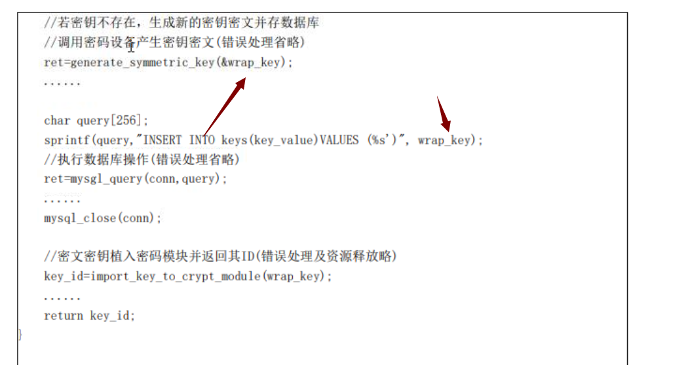
图2
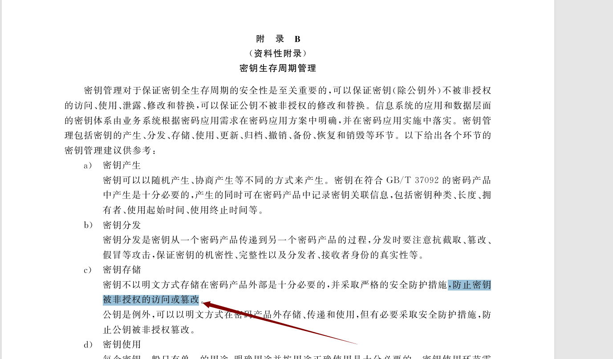